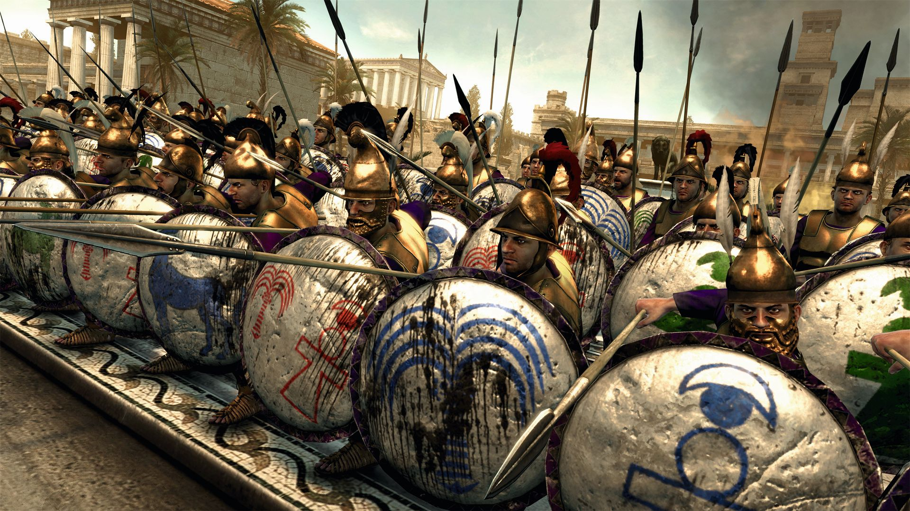
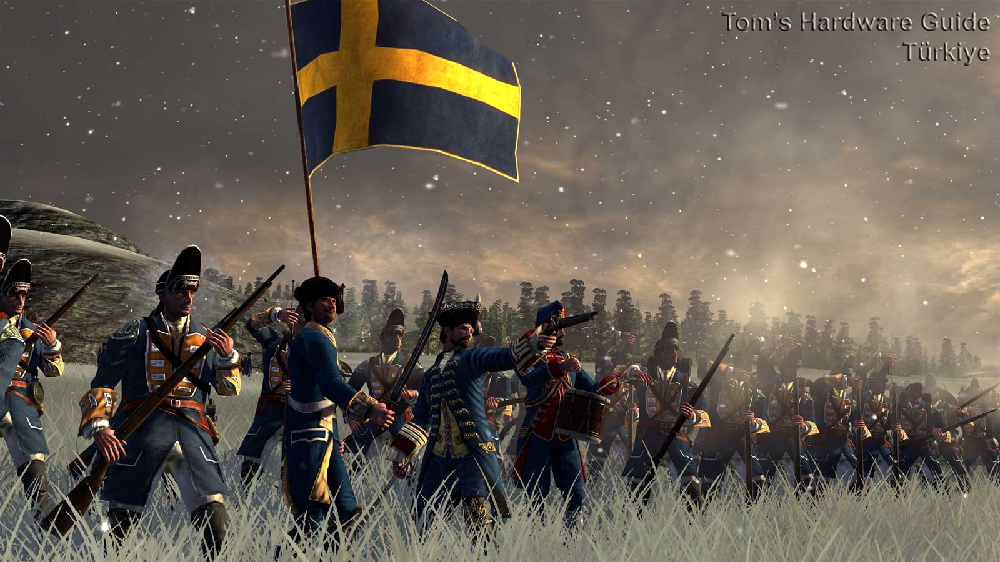
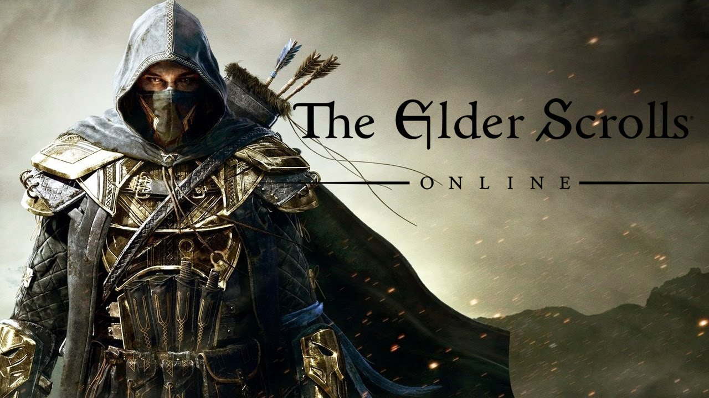
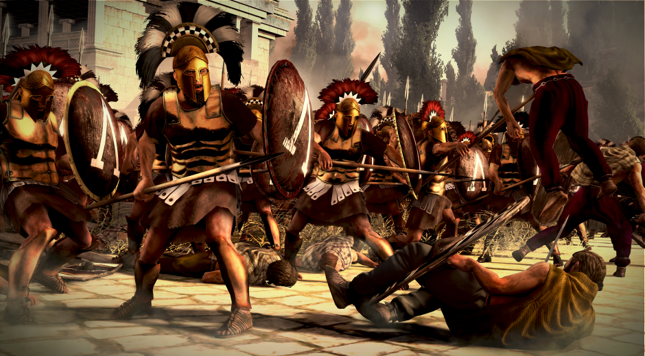
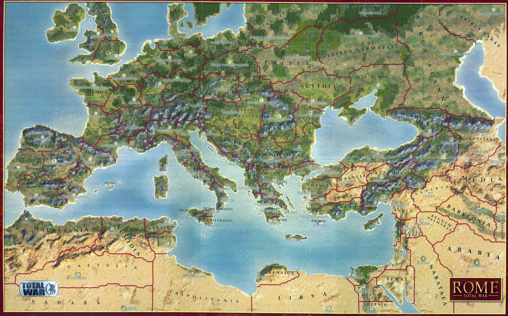

Rome: Total War is a PC strategy game developed by The Creative Assembly and released on 12 April 2004 by Activision. The Mac OS X version of the game was released on 5 February 2010 by Feral Interactive. The game is the third title in The Creative Assembly's Total War series. The game's main campaign is set during the rule of the late Roman Republic and early Roman Empire (270 BC – AD 14), with the player assuming control of one of three Roman families; other factions are playable once they have been unlocked. Gameplay consists of real-time tactical battles framed within a turn-based strategic campaign, taking place across Europe, North Africa and the Near East. On the large strategic scale, players spend each turn managing diplomacy, developing infrastructure, moving armies, and managing the population's growth and public order through taxes and gladiatorial games, among other tasks. On the smaller scale, real-time battles against enemy armies take place within or between cities, with the player commanding forces that can contain thousands of individual soldiers.
|  | |||
|  |  |  |  |
The player takes a role equivalent to the head of one of the three great Roman houses at the time; the Julii, Brutii, and Scipii. Each of these factions have a different set of attributes, initial objectives, and a few initial provinces under control. Control of a province is given to the faction whose army is occupying the province's city. The ultimate goal is to become emperor by conquering 50 provinces, gaining support from the people, before capturing Rome itself, but a "Short game" can be used, in which you must control 15 provinces and outlast certain faction(s). Cities have a variety of buildings, which may be built or upgraded, such as: temples, aqueducts—and amphitheatres, which increase the people's general happiness and well-being. Markets and academies respectively increase the city's financial contribution and likelihood of producing effective family members (see below). Walls make the city more resistant to assault by enemy armies—and barracks, archery ranges, and stables unlock new military units, which may train in the city. The player expands the empire by training armies in friendly cities and using them to assault and occupy enemy cities (native mercenary units may also be hired by a family member outside a city). Controlling more cities brings benefits in its increased geographical dominance and increased income from the new population's taxes. However, more cities and larger populations become increasingly difficult to control, owing to local populaces being resistant to foreign rule, and the increased distance reinforcements have to travel. If a city's inhabitants are overtaxed, underdeveloped or unprotected, they rebel and become in effect their own faction - the player's control of the city is lost, garrisoned units are forced out of the city, and a hostile rebel army is formed in its place.
A demo of the game was released on 23 August 2004 and is freely available for download. It features a playable version of the Battle of River Trebia, with the player taking the role of the brilliant general Hannibal. Prior to its release, a preliminary but completely workable version of the game engine was used in two series of TV programs: Decisive Battles by the History Channel where it was used to recreate famous historical battles, and Time Commanders by BBC Two, where teams of novice non-gamers commanded ancient armies to replay key battles of antiquity. The game engine was fine-tuned specifically for these television shows by military historians for maximum historical accuracy. In addition, both series had the same music track as the battles in Rome: Total War. The original music soundtrack for the game was composed by Jeff van Dyck, who received a BAFTA (British Academy) Interactive Awards nomination for his work. His wife Angela van Dyck features in some of the vocals including Forever, which plays during the game's credits; Angela also wrote the lyrics for the song "Divinitus", written in quasi-Latin. The servers were shut down on 31 May 2014 after nearly 10 years being online. The servers are now defunct and not accessible on the original retail copy of Rome: Total War, but the Steam version still supports online play through Steam Servers with the Steam update to game Version 1.51. However, it's possible to obtain the Steam version using the CD Code in the retail copy when activating a product on Steam.
Each faction starts with a set of family members composed of that faction's leader, his spouse, their children, including a faction heir, any of their spouses and any grandchildren. Only the male members of the family are controllable, once they reach the age of maturity, 16 years old. They govern settlements when stationed in a city and when fielded upon the world map, command armies. Male family members are added to the family by births between married family members, as well as adoption and marriage. Family members eventually die, either naturally through old age or by death in battle, assassination or due to natural disasters. In the absence of generals commanding field armies, captains are the commanders by default. Admirals fulfill a similar function for fleets. Neither are family members, but appear in the list of forces when displayed. However, if a captain is victorious in a battle in which the odds are against him, the player may have the option of adopting the captain. Julii family member with several traits and his retinue. Family members can command troops in tactical battles and help maintain order in cities, with effectiveness depending on their level of experience. Character traits can prove to cause both beneficial advantages as well as weaknesses to the character. Family members can acquire traits depending on their actions in battle or when governing a city. These can have both positive and negative effects on their command, management, and influence, which in turn affect their battlefield performance and how happy a province's populace lives under their governance. Some of these traits are hereditary, and can be inherited by the children of a family member. Family members can also acquire ancillaries by the same actions. These are members of a general's retinue, but can only number up to eight. These ancillary characters can be traded between two family members if they are in the same army or city.